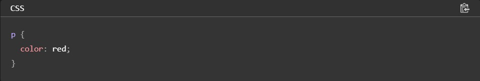
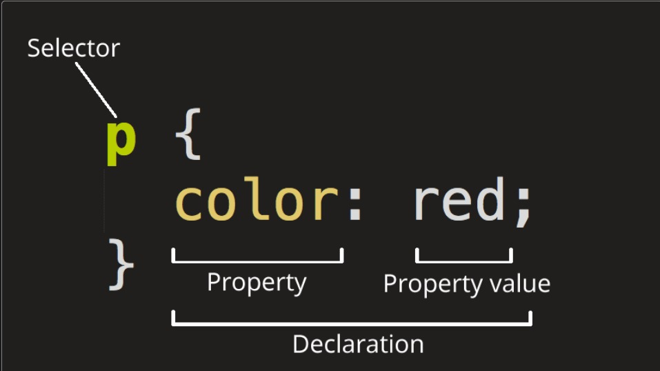

CSS (Folha de Estilo em Cascata) é o código que você usa para dar estilo à sua página Web. CSS básico apresenta tudo que você precisa para começar. Responderemos a perguntas do tipo: Como mudo meu texto para preto ou vermelho? Como faço para que meu conteúdo apareça em determinados lugares na tela? Como decoro minha página com imagens e cores de fundo?
Assim como o HTML, o CSS não é realmente uma linguagem de programação. Também não é uma linguagem de marcação — é uma linguagem de folhas de estilos. Isso significa que o CSS permite aplicar estilos seletivamente a elementos em documentos HTML. Por exemplo, para selecionar todos os elementos parágrafo de uma página HTML e tornar o texto dentro deles vermelho, você escreveria este CSS:
Vamos tentar: cole as três linhas de CSS acima em um novo arquivo, no seu editor de texto, e salve o arquivo como estilo.css na sua pasta estilos.
Vamos dar uma olhada no CSS acima com mais detalhes:
Toda essa estrutura é chamada de conjunto de regras (mas geralmente usamos o termo "regra", por ser mais curto). Note os nomes das partes individuais:
O nome do elemento HTML no começo do conjunto de regras. Ele seleciona o(s) elemento(s) a serem estilizados (nesse caso, elementos). Para dar estilo a um outro elemento, é só mudar o seletor.
Uma regra simples como color: red; especificando quais das propriedades do elemento você quer estilizar.
Forma pela qual você estiliza um elemento HTML. (Nesse caso, color é uma propriedade dos elementos). Em CSS, você escolhe quais propriedades você deseja afetar com sua regra.
À direita da propriedade, depois dos dois pontos, nós temos o valor de propriedade, que escolhe uma dentre muitas aparências possíveis para uma determinada propriedade (há muitos valores color(cor) além do red(vermelho)).
• Cada linha de comando deve ser envolvida em chaves ({}).
• Dentro de cada declaração, você deve usar dois pontos (:) para
separar a propriedade de seus valores.
• Dentro de cada conjunto de regras, você deve usar um ponto e vírgula
(;) para separar cada declaração da próxima.